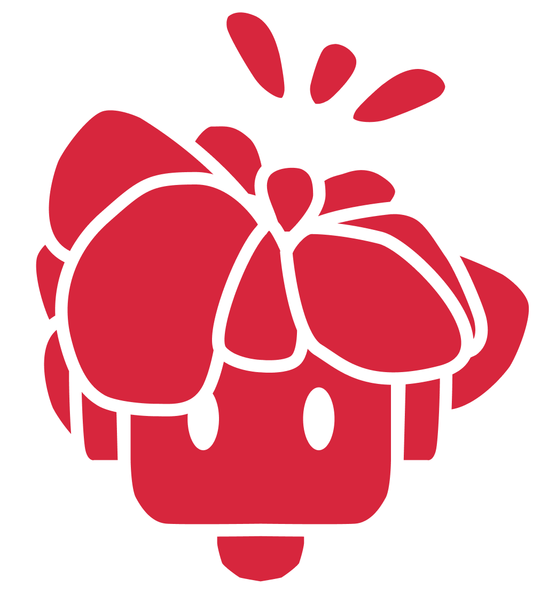

Projetos
Uma seleção do que venho produzindo — de peças de comunicação a experiências em vídeo e 3D. Os cases completos chegam em breve.
Trajetória
09/25 — atual
Designer de Conteúdo, estágio
SIEG Soluções Fiscais Estratégicas
Peças gráficas e conteúdos visuais para comunicação interna e externa, seguindo diretrizes de identidade e objetivos de comunicação da empresa.
08/24 — 10/24
Orientador voluntário
Fundação Projeto Pescar
Apoio em atividades de informática básica e comunicação social, incluindo a preparação de uma aula sobre hard skills e soft skills.
03/23 — 05/23
Assistente de aulas, estágio
Escola Uniart
Primeira experiência profissional em ambiente criativo: design digital, produção visual e apoio ao uso de ferramentas de edição, ilustração e motion.
2025 — 2026
Produção Multimídia
Senac São Paulo · Ensino Superior
Design Gráfico · Audiovisual · Fotografia · UI/UX · Prototipagem · Motion Design · Modelagem 3D · Gestão de Eventos
2022 — 2024
Técnico em Internet of Things
Senac São Paulo · Ensino Médio Técnico
Sobre mim
Sou Luís Bispo de Andrade, produtor multimídia e designer gráfico em formação, de São Paulo.
Trabalho na fronteira entre design, produção de conteúdo e tecnologia — o mesmo projeto pode passar pelas minhas mãos como peça gráfica, vídeo e protótipo de interface antes de chegar ao destino final. Uso inteligência artificial como ferramenta de processo, não de atalho: o que sustenta o resultado continua sendo a decisão de design.
Cada projeto é uma chance de aprender algo que eu ainda não sabia fazer.
- Design Gráfico
- Direção Visual
- Edição de Vídeo
- Motion Design
- Fotografia
- UX/UI
- Modelagem 3D
- IA aplicada ao design
Carregando…

Contato